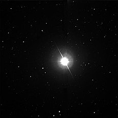
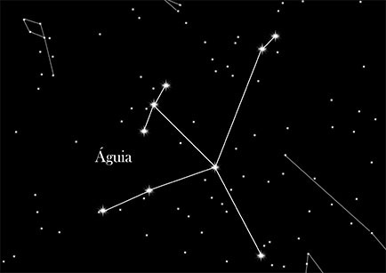

Altair

Altair leva cerca de 10 horas para girar em torno de seu próprio eixo, ao passo que o Sol, por
exemplo, faz a mesma rotação em cerca de 25 dias e a terra o faz em 24 horas. Por isso aquela
estrela sofre um achatamento. A estrela tem menos de um bilhão de anos. O Sol, em comparação,
tem 4,5 bilhões de anos.

Estrela próxima do Sol, de cor branca e a mais brilhante da constelação de Aquila ou Águia.
Por isso também pode ser denominada por Alpha Aquila. Altair é uma estrela dupla visual,
sendo a estrela companheira francamente menos brilhante, tendo uma magnitude de 10. Altair
está situada na região central da ave imaginada e por isso é por vezes chamada coração da
águia. Esta estrela faz parte ainda de um segundo desenho imaginado, que. não sendo uma
constelação oficial, é ainda assim bastante conhecido: o Triângulo de verão, onde as outras
duas estrelas do triângulo são Vega e Deneb, respetivamente as estrelas Alpha de Lyra (Lira)
e de Cygnus (Cisne). Magnitude aparente: 0,77; magnitude absoluta: 2,3; classe espetral: A7
Vn; distância: 5,0 parsec ou 16,3 anos-luz.
Desenvolvedoras:
MARIA LUIZA GONÇALVES PEREIRA
NICOLY RILLARY BRITO DA SILVA